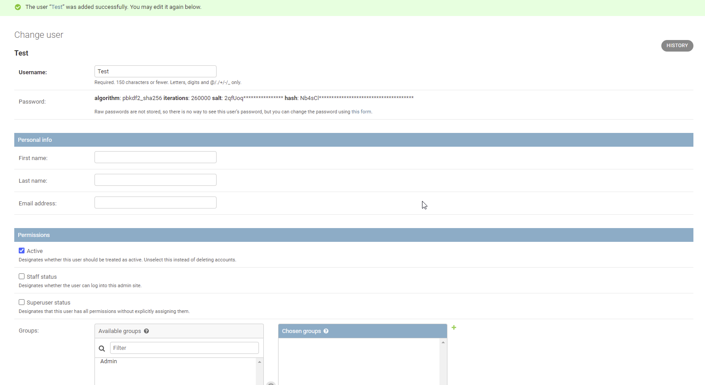
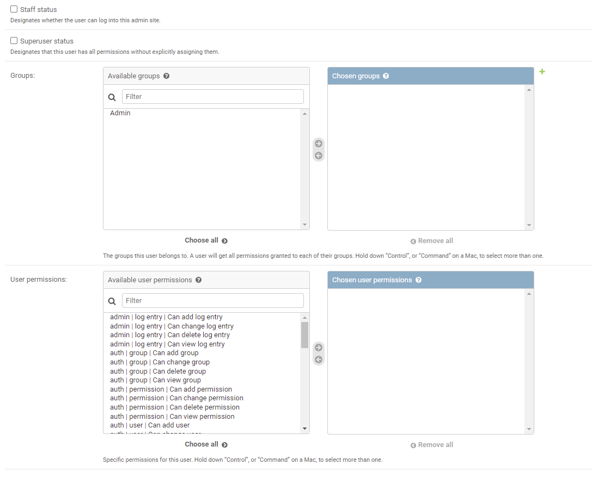
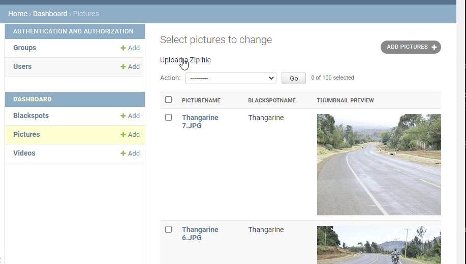
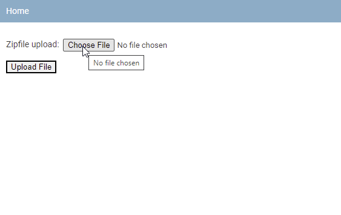

Background Information
This project encompases visualization of Road Blackspot in the five counties that were visited in a web portal. This documentation is to help the system admininstrators to maintain current and subsequent versions of the platform.
Project Implemetation
The project was Implemetated by St. Johns Ambulance
Tech Stack
Tech stack means the technologies used in the development of the GIS enabled web portal (Geoportal)
The system encompases of two segments the back-end and the frontend;
The back-end of the system stores and manipilates data
While the front end of the system is meant to visualize the data
The Backend which this manual will be more focused on, was Implemetated using python language using the Django Framework.
The Frontend on the other hand was implemented using JavaScript language using the Vue Framework.
System Administration
This section highlights processes and tasks that a system admininstrator may undertake. The tasks entail updating datasets and in some instances editing datasets.
Accessing the system as an Admin user
In order to perform administrative tasks one has to access the system from the admin page.
Login Credentials shall be shared and one can use this to gain access to the system.
As at now the system admin page can be found by clicking Crash Dashboard Admin.
Adding users and Managing users
Adding users with super user status can be done in two ways.
In the server through the terminal by exceution of commands
Through the dashboard admin page Crash Dashboard Admin.
Instructions on how to access the server will be given on a separate forum to be agreed.
Adding user from the Admin dashboard is pretty easy the following steps are followed to do so:
log into the dashboard
click on the users tab
Add the user information and save
Giving the user additional information and super user status
You may add additional information for the user for instance;
First name
Last name
Email address
Give the user active status by clicking the staff status and Super user status. This allows the user to access the admin dashboard.
Managing what a user can do
You can limit what users can do by creating user groups and adding users to the group or just by adding user permmisions for each user.
Adding user permmisions in groups will help in whether a user can add, delete or modify data.
Adding Data
There are three data models:
Blackspots
Pictures
and Videos
The three models are responsible for holding the datasets in the database.
The Blackspots Module holds data for the blackspot points.
The Pictures and Videos Modules holds the data for the pictures for various blackspot locations.
To add data one needs to click on the module and provide information that is required, in the event that the data is bulky upon request customizations may be made to allow for the datasets to be uploaded this may attract administrative actions on by the respective organizations on the same.
However, at the moment automation has been made to allow the admin users to uplaod pictures that are zipped and the system will unzip and ingest into the database.
It is important to note that the Blackspot data have other information together with county name and the backsport name, the Pictures and Videos date also have the county and the blackspot name. This helps to correctly link the two for visualization, therefore while uploading the picture it is important to add;
picture name
category
Blackspot name
county
choose the file
Pictures of a blackspot may be added, for various reasons. if a blackspot point exists in the database, adding another picture with the blackspot name will add more pictures that can be seen in the front end and also from the preview images in the admin dashboard.
Adding multiple pictures of an existing blackpot has been automaated and one can simply zip the picture and have the zip file name same as that one of the blackspot and use the upload zipfile tab on the dashboard to do so.
Choose file to upload
